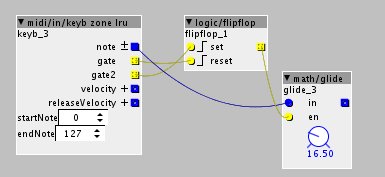
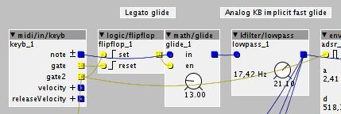

A western movie camp fire by night.
Library/community/tiar/GM/023-Harmonica-tiar.axp
- 3 octave paraphonic
- Aftertouch sensitive
- The modulation wheel controls the echo/delay
Simply play parallel thirds to get the wild west spirit.

A western movie camp fire by night.
Library/community/tiar/GM/023-Harmonica-tiar.axp
Simply play parallel thirds to get the wild west spirit.
Thanks @SmashedTransistors for these great patches, they sound very nice.
I was hoping to easily add pitch bend to them (for my own usage) but I can't see a way my limited brain can do it.
Keep up the great work (I like the saxophone too  )
)
i don't think pitchbend will be easy to add since these patches use a fixed oscillator bank...
Most of the original string machines used a single HF oscillator and frequency and octave dividers.
Oscillators - in the oscillator banks i coded at the moment - are as easily modulable as any other oscillators.
I already added vibrato inputs for small (multiplicative linear: " * (1+epsilon) " ) frequency deviations (see the Harmonica patch).
I can make up a solution for larger (exponential) modulations and add an input for that.
Hi @mtyas,
I added +-12 semitone pitch bend to Library/community/tiar/strings/052-Synth-Strings-2-tiar.axp
Pitch bend on chords is evil 
Library/community/tiar/GM/031-Distortion-Guitar-tiar.axp
(beware of sound level)
I started this one to test the oversampling / downsampling / antialiasing objects I am developing.
This is a polyphonic patch that uses a common distortion, so the resulting sound mostly depends on the frequency ratios. 4th, 5th and 8ves sound smooth, other ratios will sound harsher.
The distortion is x2 oversampled. It is based on the classic scheme: sat -> high pass -> sat
The saturations are anti aliased soft clippers (differentiated polynomials and x2 oversampled).
I added a stereotypical ping pong delay.
Library/community/tiar/GM/040-Synth-Bass-2-tiar.axp
A mono synth bass reminiscent of the late 70s.
great! for typical glide and portamento bass synth stuff i would rather use something like this at the input:

then feed your adsr from gate2 to only retrigger on non-legato notes if you so wish
Thanks @lokki for this tip 
I did not spotted the glide object in the math directory!
I've used a kfilter to mimic the behaviour of an analog keyboard.
Old analog designs have an analog Sample and Hold circuit that charges a capacitor through a small resistor
See the "Echantillonneur bloqueur / CV" block here:
These basic S&H circuits induce a systematic fast and "clicky" glide.
So I added your legato circuit just before my kfilter:

I like the way it can be controlled It really reminds me my analog synth.
nice. if you also use the lru midi in object you get the following effect:
when you glide from one note to another and hold the old note it will bounce back to this old note once you release the new note. this is one of the key features in bass synths or in bass synth playing...(at least for me)
I'm not really satisfied with the envelopes when playing "bounce back"
I try to figure out how to distinguish those two cases.
ok, i see. so you want retriggering of new notes even if you play them legato? and only want to have smooth transition when you release a key and there is still one that is hold? i think for that you will have to write your own (or modify an existing) midi in object.
That's exactly what I think.
At the moment, I'm working on DP2 antialiased oscs.
I'll take some time later to have a closer look to mono midi objects
Coding these oscs and distortions help me to learn many tricks and gave me new ideas.
I have a few other oscs to experiment with.
About the general phase modulated/distortion wavetable algorithm,
I'm focusing on the integration/differentiation scheme. So, my first attempts use a hardcoded wavetable/distortion.
All my attempts to make a DP2 antialiased phase modulated wavetable osc failed so far (accuracy of division).
Thus, at the moment i'm limited to DP1 antialiasing + x2 oversampling scheme. But well, i think i will stick to it.
Soon I'll have to look at how to use SDCard/SDRAM/SRAM .
Library/community/tiar/GM/008-Clavinet-tiar.axp
6 voice polyphonic.
It uses some of my new 12 Steps Oscillators.
Library/community/tiar/GM/091-Pad 3 (polysynth)-tiar.axp
8 voice polyphonic.
Sort of blade runner pad.
Needs to be controlled by a keyboard with aftertouch (channel or polyphonic)
as the filter is totally controlled by pressure.
Library/community/tiar/GM/041-Violin-tiar.axp
A polyphonic violin sound with volume and vibrato controlled by aftertouch (channel or polyphonic).
It uses my new osc tiar/osc/SyncPM3 which has experimental formantic capabilities.
(Loosely based on this Clavia G2 patch)